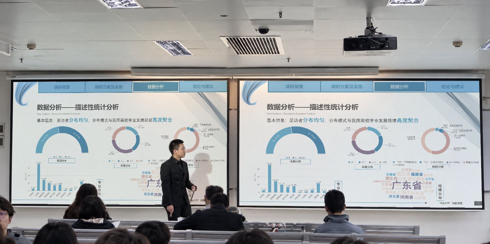
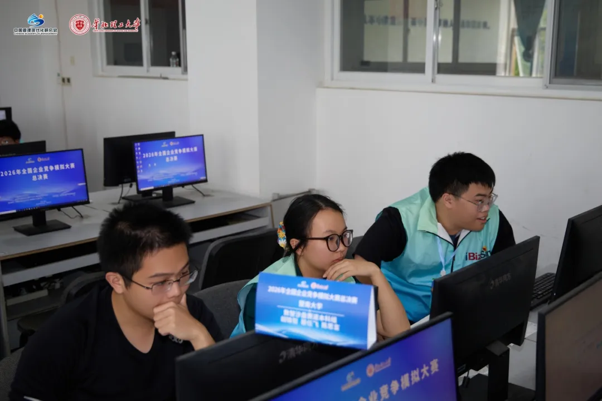

AI 协作实践 · 进行中内容更新
本站建设与 AI 协作
我希望搭建服务于学习、研究与日常工作的个人 AI 系统。本站是一次实践：由我确定目标、公开内容与关键取舍，AI 协助整理材料、制作页面和检查问题。
精选研究与项目

广东赛区答辩调查研究 · 2025
研究大学生如何选择网课，理解在线学习与校内课程的关系。
 产业走访
产业走访产业调研与商业策划
与不同专业的同学开展产业研究与实地调研，围绕蛋品流通与价格形成问题，推进商业策划和信息产品设计。

全国总决赛现场模拟经营 · 2026
判断市场机会、推演对手策略，在竞争与资源约束中参与经营决策。

框架 · 策略 · 数据
中信证券 · 2026
从宏观框架与铜产业研究入手，延伸到多资产配置研究，并将研究所得用于模拟路演。
部分项目与实践
AI 协作实践 · 进行中内容更新
我希望搭建服务于学习、研究与日常工作的个人 AI 系统。本站是一次实践：由我确定目标、公开内容与关键取舍，AI 协助整理材料、制作页面和检查问题。
经历概览
审计、银行、商品研究与证券研究相关的实习及产业实践记录。
审计助理
参与集团型客户年审，在带教与项目复核下执行函证、PPS 抽样、凭证及原始单据核验，并整理科目底稿与替代性测试。
业务助理
工作覆盖网点运营、个人信贷与对公信贷：协助客户服务和业务分流，参与贷款材料审核、整理与系统录入；随客户经理走访企业，参与贷前调查、初步信用分析和评估报告起草。
研究助理
围绕大宗商品与有色金属开展研究支持，从套期保值、产业链基本面与期现关系切入，以镍、铜等品种梳理供需、库存和价格驱动，并比较境内外机构的商品研究框架。
研究助理
参与宏观框架梳理与铜产业链数据研究，开展多资产配置研究，通过横向产品比较深化理解并完成模拟路演稿；随导师参与业务与客户交流。
查看研究实践另有经历
参与跟单与制单支持，并通过社交平台开发潜在客户、沟通海外需求。
学习与考试
学习经历、奖学金与专业考试记录。
研究之外
徒步、骑行与兵击，是研究之外的日常兴趣。
其他兴趣：阅读、吉他。